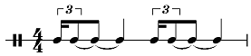

«24 прелюдии» Клода Дебюсси
Признанной вершиной фортепианного наследия Дебюсси стал цикл (в двух тетрадях по 12 в каждой, 1910 и 1913 г.). Это итог многолетних поисков композитора в области пианизма.
Дебюсси был последним из крупных западноевропейских композиторов, в чьем творчестве жанр прелюдии играл такую важную роль (после Баха и Шопена) – в ХХ веке его развитие переместилось, главным образом, в Россию.
В отличие от шопеновских (Прелюдии Шопена), прелюдии Дебюсси программны. Все они имеют оригинальные пост-заголовки – программные названия, которые фигурируют в конце музыкальных текстов. Композитор словно предлагал слушателю самостоятельно постичь смысл музыки, а уже потом сверить свои ощущения с авторским пояснением. В таком подходе к программности Дебюсси близок Стефану Малларме (одному из лидеров французского символизма), который писал: «Назвать предмет – значит на три четверти уничтожить наслаждение от поэмы; внушить его образ – вот мечта».
Названия прелюдий кратко обрисовывают образную сферу каждой миниатюры, указывают на то, что стало источником музыкального замысла. Чаще всего это природа: море (в «Парусах», «Туманах», «Ундине», «Затонувшем соборе»), воздушная стихия («Ветер на равнине», «Звуки и ароматы реют в ночном воздухе...», «Что видел западный ветер»), свет («Терраса, посещаемая лунным светом», «Фейерверк»). Многие сюжеты были почерпнуты из произведений изобразительного искусства («Дельфийские танцовщицы», «Канопа», «Ворота Альгамбры»), а также литературных сочинений – символистской поэзии, творчества великих английских писателей (Шекспира, Диккенса).
В целом образы прелюдий типичны для импрессионизма. Это пейзажи, портреты (нередко пародийного плана), жанрово-бытовые зарисовки, сказочно-легендарные и фантастические сюжеты, любимые композиторами-импрессионистами экзотические образы Испании.
Больше всего в цикле Дебюсси пейзажных прелюдий. В первой тетради это «Паруса», «Ветер на равнине», «Звуки и ароматы реют в ночном воздухе»[1], «Холмы Анакапри», «Шаги на снегу», «Что видел западный ветер»; во второй – «Туманы», «Мертвые листья», «Вереск», Терраса, освещенная лунным светом».
Пейзажность прелюдий Дебюсси, однако, не сводится к иллюстративности. Яркий пример – прелюдия «Шаги на снегу» (6/I), музыку которой никак нельзя считать только зарисовкой зимней природы. Она полна психологического смысла, что подчеркивает начальная авторская ремарка: «этот ритм должен передать звуками пространство печального ледяного пейзажа». Пояснение касается остинатного ритма, пронизывающего пьесу от начала до конца . Он акцентирует впечатление скованности, застылости, беспредельной пустоты. Скорбная, тоскливая, музыка прелюдии зарождается в тишине, растет, достигая кульминации (в середине трехчастной формы), а затем тихо замирает.
Основная тема диатонична, но при этом крайне неустойчива в тональном отношении. Тональный центр постоянно смещается под влиянием модальности. Обилие пауз придает декламационной мелодии «разорванный», фрагментарный характер. Развитие всей прелюдии предопределено мерным движением секундового мотива, – его поступь затруднена, но безостановочна:
В построении своих прелюдий Дебюсси придерживается основного закона циклических композиций – контраста соседних пьес. При этом он не стремится к той строгой тональной логике, которая отличает циклы Баха и Шопена.
В качестве важного средства создания контраста часто выступают смены темпоритма. При этом обращает на себя внимание темпоритмическая парность соседних прелюдий. Это различные сочетания умеренного и подвижного темпов, чаще всего – Modere и Anime. Контраст типов движения становится основой всей Первой тетради (наибольшей силы он достигает в сопоставлении 6й и 7й прелюдий – «Шаги на снегу» и «Что видел западный ветер», то есть в самом центре). Кроме того, парность прелюдий зачастую подчеркивается и чередованием четных и нечетных размеров.
В создании контраста широко используются и ладогармонические средства. Их арсенал очень разнообразен – от скромнейшей диатоники, воскрешающей атмосферу старины, до изощренной хроматики и искусственных ладов, например, целотонового (тема прелюдии «Паруса»).
Формы прелюдий трудно свести к классическим композиционным схемам, настолько одни своеобразны и импровизационны. Как известно, Дебюсси сознательно отказался от строгих композиционных схем. В строении пьес лишь намечается сходство с некоей репризной композицией (чаще трех-, либо двухчастной), в которой смещены пропорции разделов.
Примером такого «смещения» является прелюдия 10/I – «Затонувший собор». Она картинно воплощает сюжет популярной бретонской легенды о соборе Ис, скрытом в морских глубинах. Основная тема прелюдии – тема всплывшего собора – представляет собой величавый хорал. Изложенный могучими 8-голосными аккордами на фоне глубокого баса, имитирующего звон колокола, тема собора появляется только в центральном разделе прелюдии. Она не дается сразу в «готовом виде». Ее интонации формируются постепенно. Сначала – в тихом перезвоне параллельных кварто-квинтовых созвучий, которые доносятся словно из нереального мира. Статичный ритм, pp в самых крайних регистрах фортепиано (общий диапазон начального звучания – 6 октав!) создают иллюзию подводного пространства
Становление хорала продолжается далее в новой теме, напоминающей молитвенные песнопения (тт.7-13, cis-gis), а затем – в предыктовом разделе, непосредственно подводящем к теме собора (тт.16-27). Здесь возникает беспокойное «покачивание» триолей, сопровождаемое сильным crescendo и приемами ритмического дробления. После широкого развития основных тем в центральном разделе прелюдии начинается длительный спад (видение собора постепенно исчезает).
Несмотря на то, что фортепиано Дебюсси в принципе не стремится уподобиться оркестру, ему, тем не менее, подвластно воплощение различных инструментальных тембров. В качестве примеров можно привести не только колокольность «Затонувшего собора», но и валторновое звучание в прелюдии «Звуки и ароматы реют в ночном воздухе», флейтовый тембр в «Вереске» и «Девушке с волосами цвета льна», тембр гитары в «Прерванной серенаде», банджо и барабан в «Менестрелях». В этом тоже проявился характерный для импрессионизма акцент на фонической стороне музыки.
Тематизм большинства прелюдий конкретен в жанровом отношении. Здесь встречается и хорал («Затонувший собор»), и токката («Ветер на равнине»), и различные испанские жанры – хабанера, сегидилья, копла и т.д. Особенно много всевозможных танцев, что становится важным средством объединения цикла. Определенный танцевальный прообраз вызывает ощущение колорита конкретной эпохи. Так, например, в «Дельфийских танцовщицах» строгий обрядовый танец создает атмосферу старины, в «Менестрелях» и «Генерале Левайне» – ассоциации с современным мюзик-холлом.
«Девушка с волосами цвета льна»
В группе прелюдий-портретов наибольшую популярность приобрела «Девушка с волосами цвета льна» (8/I). Ее музыка воплощает идеал вечной женственности и красоты. В ней господствует светлая мечтательность, хотя выражение эмоций носит то более сдержанный и созерцательный характер, то приобретает большую порывистость и эмоциональность.
В сравнении со многими другими прелюдиями цикла, фактура подчеркнуто проста. Она отличается акварельной прозрачностью, особенно вначале, когда в тишине появляется нежный одноголосный напев редкой, для Дебюсси, протяженности. Отсутствие острых вводнотоновых тяготений (пентатонака) усиливает ощущение ясности и покоя. Мелодия развивается спокойно и неторопливо, сопровождаемая мягкими аккордами. Тональность Ges-dur «расцвечивается» отклонениями в Es-dur и В-dur.
Середина трехчастной формы, в которой изложена пьеса, мало контрастирует крайним разделам. В ней то же настроение, тот же склад и формы мелодического движения. Развитию подвергается, в основном, материал первых трех тактов (тематическое зерно прелюдии).
Реприза поначалу резко выделяется плотностью фактуры, но уже со второго предложения начальная тема звучит почти без изменений.
«Прерванная серенада»
Следующая пьеса – «Прерванная серенада» (9/I) – является образцом преломления в жанре прелюдии бытовой сценки из испанской жизни. Это – шутливая ночная фантазия, содержание которой раскрывается в резком сопоставлении любовного признания и неожиданно вторгающихся в него звуков «внешнего» мира, которые заставляют певца постоянно прерывать свою серенаду. Пьеса строится исключительно на материале испанских народных танцев[2].
Основная тема «Прерванной серенады» (b-moll), опирающаяся на ритм сегидильи, вбирает некоторые типичные испанские обороты. Она вариантно проводится трижды, играя роль рефрена. Ее музыка постоянно обогащается новыми выразительными деталями: последовательно расширяется диапазон мелодии, изменяется жанрово-интонационная основа. В первом проведении это выразительно-умоляющий речитатив, во втором – распевная декламация, и, наконец, в третьем – широкое ариозное пение. Столь же последовательно расширяется протяженность рефрена (каждый раз прибавляется по 8 тактов).
Первые два проведения основной темы резко прерываются тонально «инородными» вставками (они приобретают значение эпизодов в форме рондо). Сначала это подчеркнуто громкие диссонирующие аккорды в a-moll (после нежнейшего pp), затем – четкий ритм маршеобразного танца (коплы) в D-dur – цитата из 3 части «Иберии».
«Менестрели»
Многие прелюдии Дебюсси сочетают черты музыкального портрета и жанровой сценки. К такому типу пьес относится последняя прелюдия I тетради – «Менестрели» (12/I). Ее музыка носит насмешливый, задорный характер и отличается яркой изобразительностью. В ней сочетаются контрастные тематические элементы: мотивы современной эстрадной музыки, негритянского фольклора, плавная танцевальность, имитация игры на банджо, барабанная дробь. Все это, естественно, не случайно, поскольку содержание прелюдии связано не со средневековыми бродячими музыкантами, а с актерами американского «театра менестрелей». Этот театр сыграл важную роль в формировании джаза[3]. Гармонический язык «Менестрелей» отмечен подчеркнутой жесткостью, диссонантностью (обилие секундовых созвучий, движение параллельными увеличенными трезвучиями). Ритмика очень острая, синкопированная. Пентатонные обороты подчеркивают сходство с негритянским фольклором и музыкой джаза.
Отличительной особенностью формы является пестрая, калейдоскопическая смена разнохарактерных образов, но и здесь имеется репризное завершение.
Фортепианная мелодика Дебюсси отличается неповторимым своеобразием. В наиболее типичных опусах композитор отказывается от широких, завершенных мелодических построений в пользу «микровыразительности», то есть небольших мелодических ячеек. Мелодическая линия экономна, сдержанна и текуча. Лишенная широких скачков, резких «выкриков», она опирается на исконные традиции французской поэтической декламации. Соответствующие общему стилю качества обрел и ритм – с постоянным нарушением метрических устоев, избеганием четких акцентов, темповой свободой.
[1] Строчка из стихотворения Шарля Бодлера.
[2] Образ Испании в музыке Дебюсси был подготовлен целым рядом произведений французских композиторов на испанские темы от «Кармен» Бизе до «Испании» Шабрие. Сам Дебюсси развивает эту традицию не только в прелюдиях, но и в «Эстампах» («Вечер в Гренаде»), в пьесе «Иберия» из орк. цикла «Образы».
[3] Актеры-менестрели на сцене выступали загримированные под чернокожих и исполняли песни и танцы, которые подбирали, странствуя по негритянским районам Юга Америки.